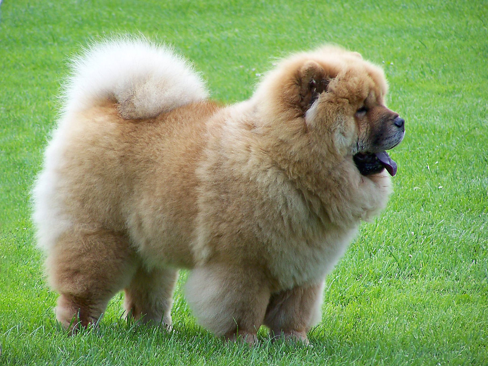

Šunų paroda
Vokiečių aviganis Buldogas Biglis Valų korgis kardiganas Pomeranijos špicas Sibiro haskis Pudelis Labradoro retriveris Čiau čiau Dalmantinas
Vokiečių aviganis
Vokiečių aviganis (vok. Deutscher Schäferhund, angl. German shepherd dog) – viena populiariausių šunų veislių. Kilmė – Vokietija. Vokiečių aviganis yra bandšunis, tapęs itin populiariu sarginiu šunimi. Kilmės šalyje šie šunys kai kur vis dar saugo bandas. Vokiečių aviganis yra vidutinio dydžio šuo, šiek tiek prailgintas, tvirtas, puikiai išvystytais raumenimis, pilvas šiek tiek įtrauktas. Pagrindinės proporcijos. Patinų aukštis ties ketera 60-65 cm, svoris 30-40 kg. Patelių aukštis ties ketera 55-60 cm, svoris 22-32 kg. 10-17 proc. kūnas yra ilgesnis nei aukštis ties ketera. Gyvena 8 - 13 metų. Gali išgyventi net 20 metų.
Skaitykite daugiau
Buldogas
Buldogai (angl. Bulldog) – šunų veislių grupė. Yra kelios buldogų veislės: amerikiečių buldogas, anglų buldogas ir kt. Buldogas – atletiškas, temperamentingas, tvirto kūno, labai ištvermingas ir patikimas šuo. Patinai stambesni. Dėl savo išskirtinės išvaizdos ir darbinių savybių, buldogas gali būti šuo kompanionas ir darbinis šuo. Šios veislės niekada negalima painioti su visiškai skirtingom Stafordšyro terjero ir amerikiečių pitbulterjero veislėmis.
 Skaitykite daugiau
Skaitykite daugiau
Biglis
Biglis (angl. Beagle, pranc. beugler - bliauti, rėkti) – šunų veislė, kilusi iš Didžiosios Britanijos. Tai medžioklinis (kraujasekys) šuo, naudotas Vakarų Europoje medžioti lapes, triušius, Sudane ir Palestinoje – šernus, Skandinavijoje – elnius, JAV – paukščius. Bigliai savo dydžiu bei išvaizda įvairiose šalyse gali būti skirtingi. Biglis pasižymi tvirtu kūno sudėjimu: vidutiniškai gili krūtinė su elastingais šonkauliais, raumeningos šlaunys, tvirtos, sugniaužtos letenos su standžiomis pėdomis.
Skaitykite daugiau
Valų korgis kardiganas
Valų korgis kardiganas - bandšunis, kilęs iš Didžiosios Britanijos. Ilgas, žemas šuo. Ausys labai didelės, stačios. Kaukolė plati ir plokščia. Uodega žemai nuleista. Krūtinė vidutiniškai plati. Akių spalva atitinka kailio spalvą. Trumpaplaukis kailis neperšlampamas. Pripažįstamos visos spalvos, tik baltymės neturi sudaryti daugiau kaip trečdalio viso kailio ploto. Dažniausi rudi su juodais dryžiais, juodi su baltymėmis, gelsvai rudi, melsvai juodi.
Skaitykite daugiau
Pomeranijos špicas
Vokiečių špicas - šunų veislė. Šios veislės šunys Lietuvoje nėra populiarūs. Lietuvos kinologų draugijoje užregistruota apie 20 mažųjų bei nykštukinių špicų (2003 m. duomenys). Špicai - ypač dekoratyvūs, lengvi, judrūs ir žaismingi šuneliai. Tai labai sena iš durpinio šuns kilusi veislė, mažai žmogaus pakeista, turinti natūraliai žavingą išvaizdą ir stiprią sveikatą. Praeiviai pamatę špicą, dažniausiai jį pavadina lapiuku ar meškiuku.
Skaitykite daugiau
Sibiro haskis
Sibiro haskis – arktinė kinkomųjų šunų veislė, laikoma viena seniausių šunų veislių. Sibiro haskiai dažnai painiojami su Aliaskos malamutais. Vidutinio dydžio šunys, šiauriniuose kraštuose naudojami rogėms vilkti. Kūnas proporcingas, vidutinio ūgio. Šie šunys stiprūs, ištvermingi, judrūs, neramūs. Patinai labai raumeningi, tačiau palyginti lengvi. Bėgioja greitai, lengvai ir gracingai. Kailis tankus. Ausys stačios. Tai viena iš nedaugelio veislių, kurios šunys gali turėti mėlynas, tamsiai ir šviesiai rudas arba nevienodos spalvos akis.
Skaitykite daugiau
Pudelis
Pudelis (pavadinimas kilęs iš vok. puddeln – teškentis vandenyje; pranc. Caniche) – šunų veislė, registruota FCI. Priskiriamas prie dekoratyvinių šunų. Galva didinga, tiesių linijų, proporcinga kūnui. Nosies galiukas ryškus. Elegantiškas snukis, jo ilgis truputį didesnis už kaukolės ilgį, neužaštrintas, tvirtas, gerai užpildytas. Lūpos standžios, vidutinio storumo. Neišsiskiria žandenos. Perėjimas nuo kaktos iki snukio silpnai išreikštas. Kaukolė ovalios, pailgintos formos.
Skaitykite daugiau
Labradoro retriveris
Labradoro retriveris – (Labradoras, anglų k. šnek. Lab) tai retriverių rūšis, gun tipo šuo. Labradorai yra populiariausia šunų, registruotų Kanadoje, Jungtinėje Karalystėje ir JAV (nuo 1991) veislė. Tai viena iš populiariausių pagalbos neįgaliesiems šunų veislių Australijoje, Kanadoje, Jungtinėje Karalystėje, JAV ir daugelyje kitų šalių. Ši veislė taip pat plačiai naudojama policijoje ir kitose oficialiose įstaigose. Labradorai yra atletiški, žaismingi, mėgsta maudytis, yra be galo švelnūs su mažais vaikais, gali būti ne tik geri vyresnio amžiaus žmonių kompanionai, bet ir disciplinuoti apsauginiai šunys. Labradoro retriveriai yra lengvai dresuojami, be to pasižymi didele ištverme ir prisitaikymu prie įvairių gyvenimo sąlygų. Išskirtinis veislės bruožas – plaukimui pritaikytos plėvėtos letenos.
Skaitykite daugiau
Čiau čiau
Čiau-čiau (kin. 松狮犬 / 鬆獅犬, pažodžiui išvertus „minkštas liūtukas“; angl. chow-chow) - dekoratyvinių šunų veislė Čiau-čiau šuo yra šiek tiek panašus į liūtą. Čiau-čiau būna trumpaplaukis arba ilgaplaukis. Spalva juoda, rausva, pilkšva, ruda, rusva, balta. Gali būti įvairaus atspalvio, bet nedėmėtas, tik uodegos apačia ir "kelnės" gali būti šviesesnės. Kailis tankus, plaukai tiesūs, standūs, pavilnė minkšta, garbanota. Kailis turi būti kasdien šukuojamas tankiu šepečiu.

Skaitykite daugiau
Dalmantinas
Dalmatinas – šunų veislė, išsiskirianti savo dėmėtu kailiu. Dalmatinų kailio dėmelės dažniausiai būna rudos arba juodos spalvos. Veislės pavadinimas kilęs nuo vietovės Kroatijoje - Dalmatijos, kur ši šunų veislė buvo išvesta. Seniau dalmatinai buvo medžiokliniai šunys, tačiau šiais laikais jie laikomi šeimos draugais ir puikiai sutaria su kitais naminiais gyvūnais. Ko gero, vienintelis šios veislės trūkumas yra kurtumas. Apie 30 % dalmatinų gimsta kurti. Perkant tokį šuniuką, reikia pasidomėti, ar jo tėvai neturėjo kurtumo geno.
Skaitykite daugiau